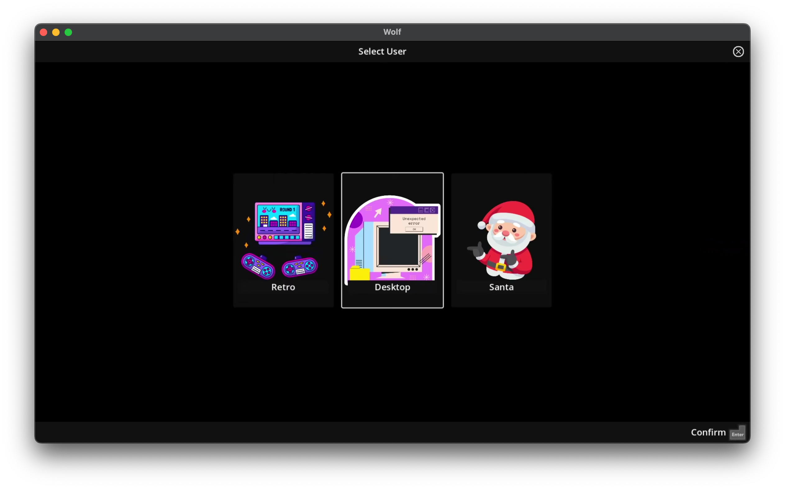
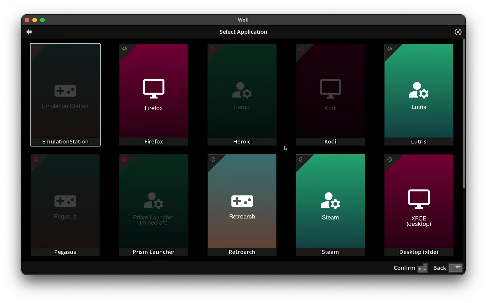

Wolf UI
Wolf UI is an application launcher and profile manager. It provides an intuitive interface for organizing, downloading and updating applications and set up cooperative lobbies.

User Interface Overview
Wolf UI consists of two main screens:
-
Profile Selection Screen: Choose which user profile to access
|
Profiles can be protected by a PIN to prevent unauthorized access, see configuration/profiles |
-
Application Selection Screen: Browse and launch applications for the selected profile

Greyed out applications aren’t currently installed, you can download them directly from Wolf UI. This will actually pull the Docker images from our open source registry.